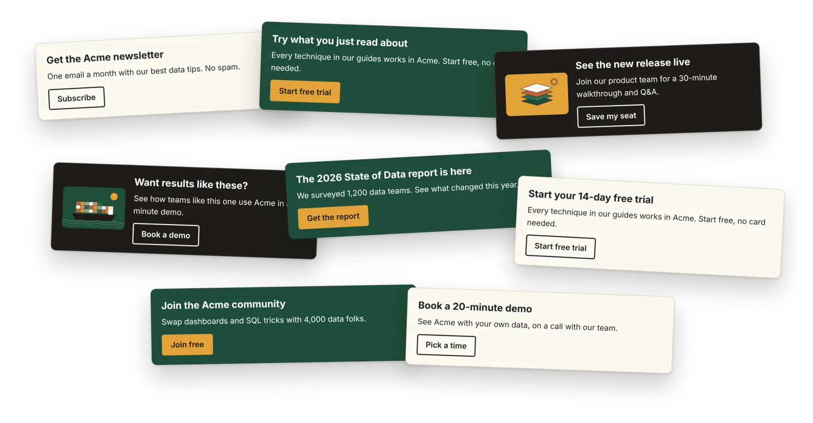
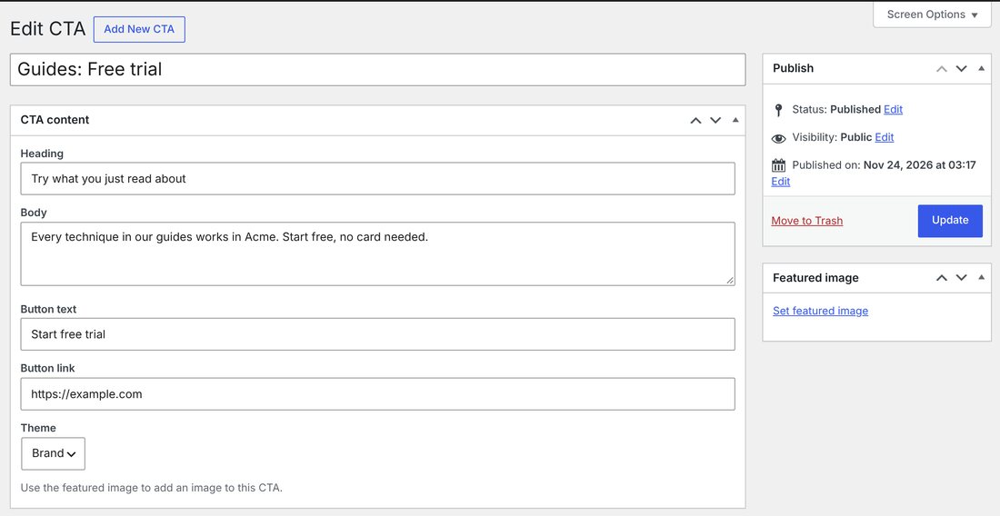
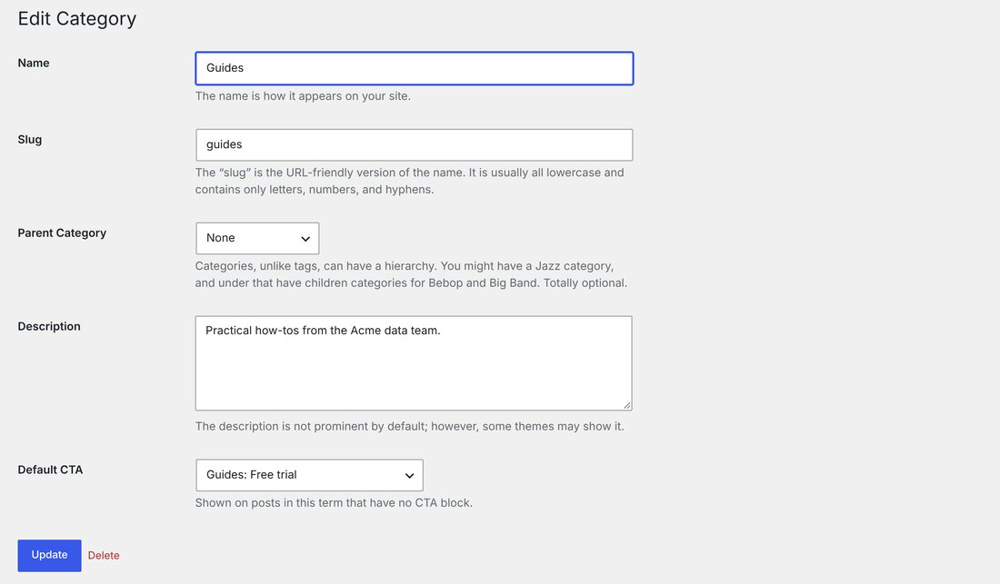
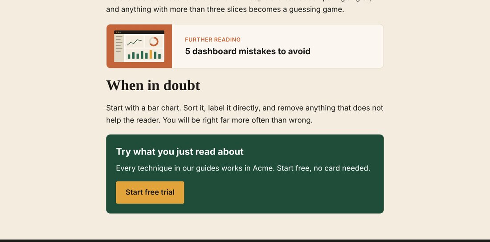
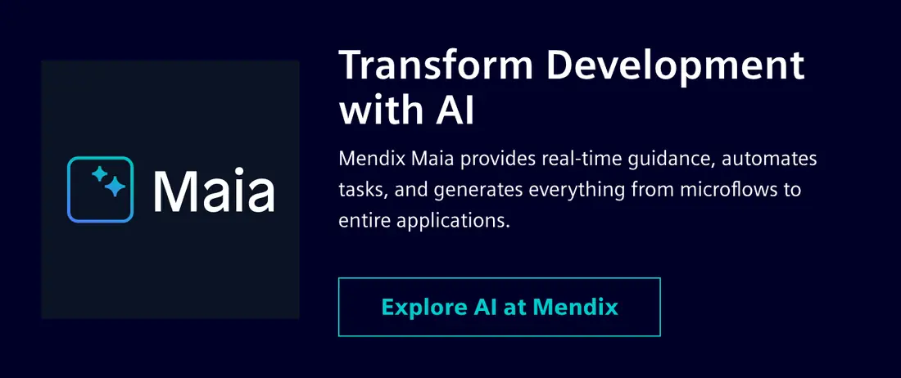
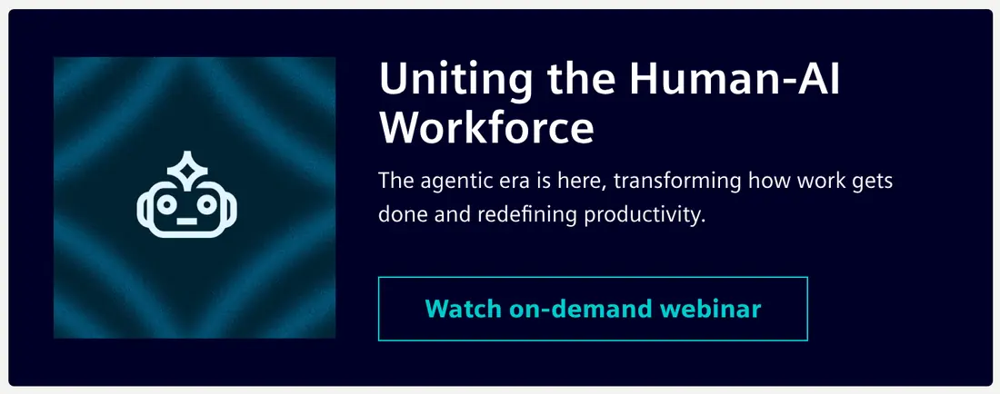
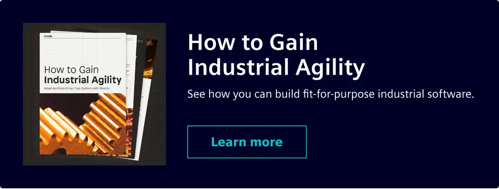
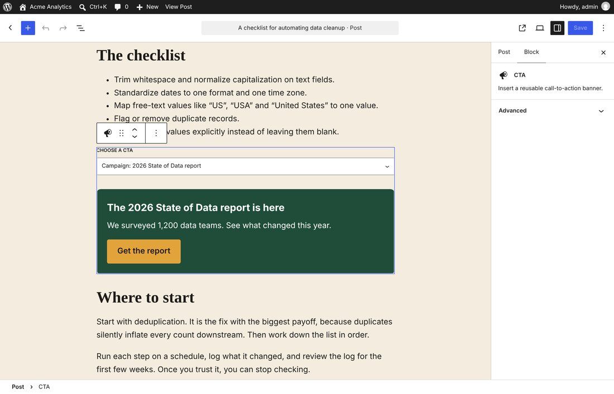

Campaign CTAs
A WordPress plugin that turns call-to-action banners into reusable content. Build a CTA once, drop it into any post, and change it in one place when the campaign changes. Posts without one still get the right CTA automatically.
- Originally for
- The Mendix blog
- My role
- Design and development
- Built with
- WordPress, PHP, block editor, JavaScript
- Status
- Still live on the Mendix blog
- Now
- Open source, rebuilt from scratch

Eight CTAs from the demo site, all built from the same plugin.
The problem
Every post on the Mendix blog ended with a call to action, pointing readers to a webinar, a report or a free trial. For a while, those were banner images: design made a new one for each promotion, and writers pasted it into their posts.
It didn't scale. Making a banner meant waiting on design, and the moment a campaign ended, every post with that banner was out of date. Fixing it meant finding and editing those posts one at a time, so mostly they just stayed stale.
The real issue wasn't the banners. It was that every copy of a CTA lived inside a different post.
CTAs as content
So I made CTAs their own kind of content. Each one has a heading, body text, a button and an optional image, styled by the site instead of drawn by hand. Writers could build one in a minute without waiting on design.
Posts don't copy a CTA; they point to it. Change the heading once and every post that uses it updates on the next page view, which is exactly what a marketing team wants when a campaign changes.

A fallback for every post
Writers won’t remember to add a CTA to every post, and older posts had none at all. So each post gets one automatically, chosen in this order:
- A CTA placed in the post always wins.
- Otherwise, the default for the post's category.
- Otherwise, the site-wide default.
At Mendix, the defaults followed the reader's stage: someone reading a beginner's guide got something different from an existing customer. One setting could quietly update the CTA on every older post in a category.


Still running
Years later, the system is still how the Mendix blog does it. Posts published in October 2026, like this one on AI agents, end with a centrally managed CTA (currently Uniting the Human-AI Workforce). Its companion plugin, the “Further reading” card, is still there too.
I sampled 100 posts from across the blog’s archive, some of them years old. Every one ends with a CTA, and three different campaigns are running at once:



The best sign a content tool works: the team keeps using it long after you’ve left.
Rebuilding it
The original was written for the classic editor: a shortcode with a dropdown button in the toolbar, fields built with Advanced Custom Fields, and markup tied to our theme. It did the job, but it couldn't live anywhere else.
The open-source version is a from-scratch rebuild for today's WordPress:
- A block instead of a shortcode, with a CTA picker and a live preview right in the editor.
- Native post meta instead of ACF, so there's nothing else to install.
- Any taxonomy for fallbacks, not just the one we used, plus the site-wide default.
- Self-contained styles with simple class names, so any theme can restyle it.

What I'd add next
When a post has several categories with defaults, the first one alphabetically wins today. Supporting a "primary category," like the ones SEO plugins add, would make that choice deliberate. I'd also let fallbacks apply to pages and custom post types.
To try it, open the live demo above. It's a full WordPress site in your browser, logged in, with sample posts showing every rule.